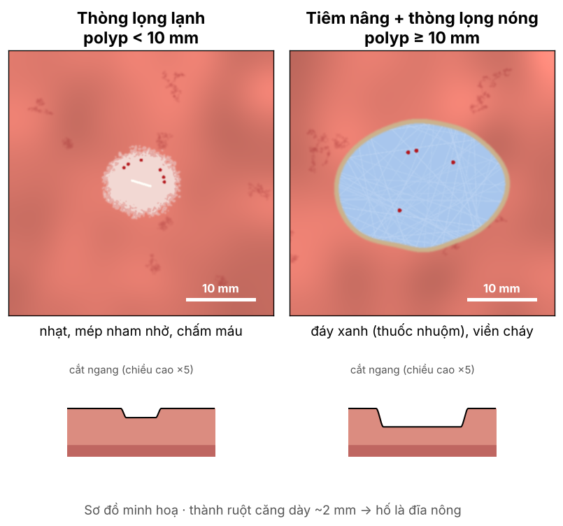

Video nội soi tổng hợp trên giải phẫu thật · có polyp và hố sau cắt
Nguyễn Hải Toàn
Kính gửi: TS. Mai Thanh Thái & PGS.TS. Hoàng Văn Xiêm
Phần 1
Đã đăng bộ cùng loại: RealSynCol, C3VDv2 (2026), EndoMapper, REAL-Colon, HyperKvasir
| RealSynCol | Của mình | |
|---|---|---|
| Nguồn | giống nhau: CT ACRIN → 3D Slicer → Blender · camera lỗ kim | |
| Số ruột | 10 | 20–30 kiểm kỹ (tới 103 nếu đủ người) |
| Polyp | không có | đúng vị trí, kích thước ACRIN |
| Trước / sau cắt polyp | không có | có, cùng đường camera |
| Túi thừa | không có | phần thêm (chờ bác sĩ) |
| Bác sĩ đánh giá | không có | có (kế hoạch) |
Cùng cách dựng — mình khác ở tổn thương
Ruột từ CT bệnh nhân (ACRIN), kiểm kỹ từng ca
Đúng vị trí, kích thước ACRIN ghi · bác sĩ X-quang xác nhận
Cùng ruột, cùng đường camera — chỉ khác hố cắt
Đáp án đầy đủ mỗi khung: độ sâu, vị trí camera, mặt nạ polyp/hố, kích thước thật · túi thừa là phần thêm
Phần 2
Lỗ kim như các bộ khác · đèn sát ống kính
Đi như bác sĩ cầm: ổn định, dừng soi, chạm thành thì lùi
Màu và mạch máu lấy từ video thật được phép dùng
RealSynCol, Colon 1 forward (Lena và cs., Scientific Data 2026 · CC BY 4.0)
Tham khảo: video nội soi trên YouTube — chỉ xem để quan sát, không dùng làm dữ liệu
Thay bằng REAL-Colon (60 ca soi thật, CC BY 4.0)
Đang làm — chưa đưa hình. RealSynCol vẽ tay mạch máu; mình làm tự động.
Phần 3
Từ CT: nhô hay hơi nhô
Theo ACRIN (đo khi nội soi) — CT để kiểm đúng polyp
Đoạn đại tràng ACRIN ghi → bác sĩ X-quang xác nhận
Không chia theo loại mô (tăng sản, u tuyến…) — CT không thấy · ghi là giới hạn

Theo hướng dẫn châu Âu ESGE 2024 (Ferlitsch và cs., Endoscopy 2024;56:516–545) · đơn giản hoá
Phần 4
Không cần người: giống ảnh thật đến đâu, đáp án có đúng không
Chạy mô hình có sẵn → chứng minh dữ liệu dùng được
Polyp, hố cắt có giống thật không · độ thật so với RealSynCol
| Hỏi gì | Làm thế nào | Tốn bao lâu |
|---|---|---|
| Giống ảnh thật? | Máy so "kiểu ảnh" của cả đống ảnh mình với ảnh nội soi thật (FID) — phải gần hơn RealSynCol | vài giờ, không huấn luyện |
| Đáp án đúng? | Dựng lại khung B từ khung A bằng độ sâu + vị trí camera — phải trùng · so với renderer thứ hai | vài giờ |
Khác bài toán thử: tự động hỏi "dữ liệu đúng và trông giống không" · bài toán thử hỏi "mô hình học từ nó có dùng được không" (cần huấn luyện)
~5.000 khung mỗi nguồn: của mình · RealSynCol · ảnh thật (REAL-Colon, thêm HyperKvasir) đã lọc
Mạng có sẵn (Inception-v3, không huấn luyện) biến mỗi ảnh thành 2048 con số → so "đám mây" của hai đống ảnh
1 con số cho mỗi nguồn — càng nhỏ càng giống ảnh thật
| So với ảnh thật | FID |
|---|---|
| Ảnh thật nửa A vs nửa B mốc sàn | thấp nhất |
| Của mình | ? |
| RealSynCol | ? |
Vì sao cần: người dùng huấn luyện và chấm điểm mô hình bằng đáp án của mình (độ sâu, vị trí camera). Đáp án sai thì mọi kết quả trên bộ dữ liệu đều sai — mà ảnh vẫn trông bình thường, không ai phát hiện.
Chỉ các file mình phát hành: ảnh A, độ sâu A, vị trí camera A và B, ảnh B
Script nhỏ, không render lại: tính ảnh A "nhìn từ chỗ B" bằng độ sâu + vị trí camera
So với ảnh B đã phát hành: lệch bao nhiêu pixel · ~100 cặp khung mỗi ruột, vài phút
Lỗi hay gặp — nhìn ảnh không thấy:
Thêm cách dễ hiểu: chiếu tâm polyp (từ CT) vào ảnh — phải rơi đúng chỗ polyp · C3VDv2 làm kiểu này với điểm mốc
| Bài toán | Đầu vào → đầu ra | Đáp án từ đâu | Mô hình có sẵn |
|---|---|---|---|
| 1 · Độ sâu | 1 ảnh → bản đồ độ sâu | render từ mesh | Depth Anything v2 (trước/sau huấn luyện thêm) |
| 2 · Tái tạo 3D | video → đường đi camera + mô hình 3D | pose + mesh thật | ORB-SLAM3, DROID-SLAM |
| 3 · Kích thước polyp | clip có polyp → kích thước (mm) | ACRIN + mesh CT | độ sâu + mặt nạ · so với bác sĩ ước lượng |
| 4 · Khoanh polyp & hố cắt | 1 ảnh → mặt nạ | render mặt nạ | U-Net / nnU-Net |
Các bài Scientific Data cùng loại chạy 1–3 mô hình mỗi bài toán · ước tính 5–7 tuần (1 người + 1 GPU, SLAM song song) · thêm: phát hiện túi thừa (phần phụ)
Nói "gần thật hơn RealSynCol, và dùng được" — không nói "như thật"
4–6 bác sĩ nội soi · trang web chấm điểm · hỏi hội đồng đạo đức VinUni sớm
Phần 5
| Khi nào | Việc |
|---|---|
| 10–11/2026 | Hoàn thiện trên ca 0233: chuyển động, màu niêm mạc, hố cắt · viết sẵn code bài toán thử |
| 11–12/2026 | Lõi 20–30 ca · bác sĩ X-quang xác nhận polyp · render + đáp án · đánh giá tự động |
| 01–02/2027 | 4 bài toán thử (5–7 tuần) · buổi bác sĩ |
| 03–04/2027 | Viết bài · đưa dữ liệu lên kho công khai · nộp Scientific Data |
Nguyễn Hải Toàn
| Bộ dữ liệu | Túi thừa | Loại |
|---|---|---|
| GastroVision (2023) | 6 ảnh | ảnh 2D |
| ERS (Gdańsk) | 135 + 325 ảnh | ảnh 2D, một phần có viền |
| Các bộ có 3D (C3VD, RealSynCol, SimCol3D, …) | không có | — |
| Của mình | có (chờ bác sĩ) | 3D + video, cùng nhãn trên CT |
Nói được: "chưa bộ nội soi nào có 3D gắn nhãn túi thừa" — không nói "chưa bộ nào có". Túi thừa là phần thêm, không phải đóng góp chính.